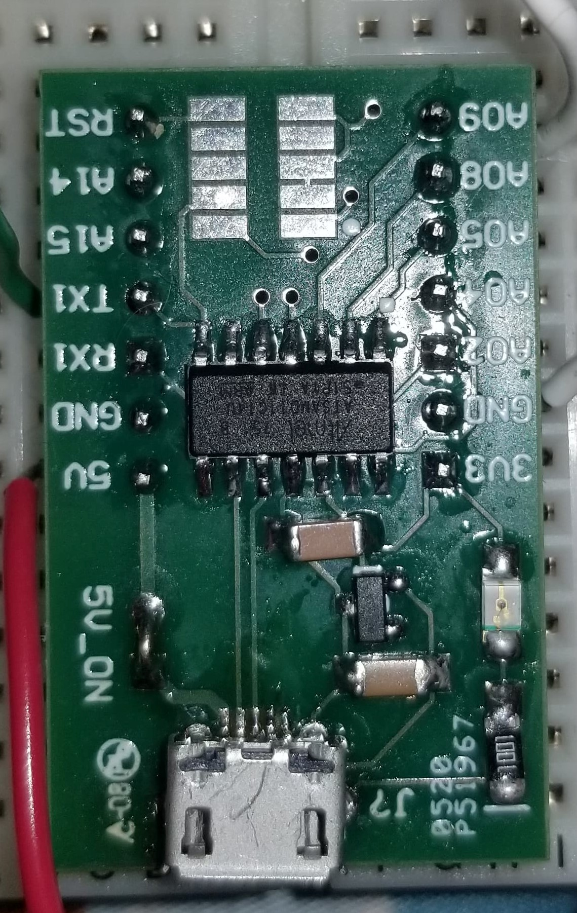
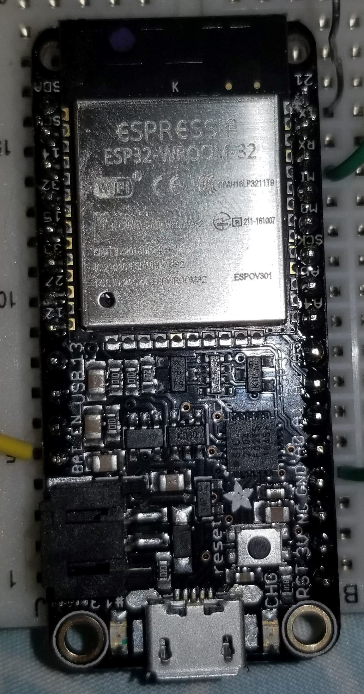
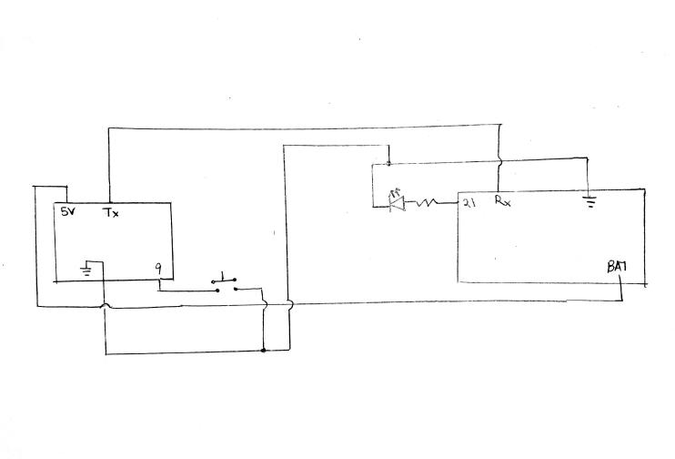
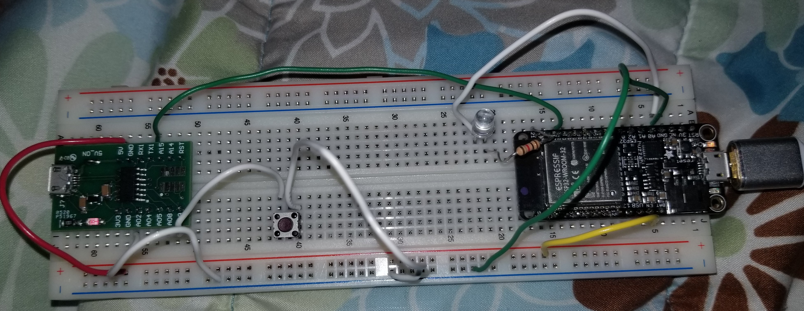
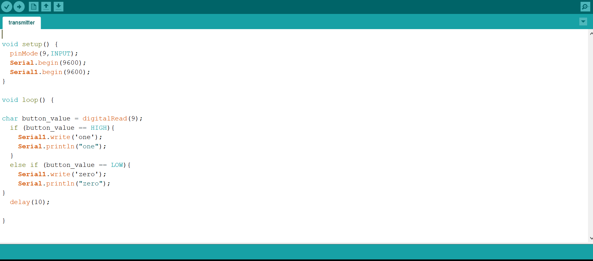
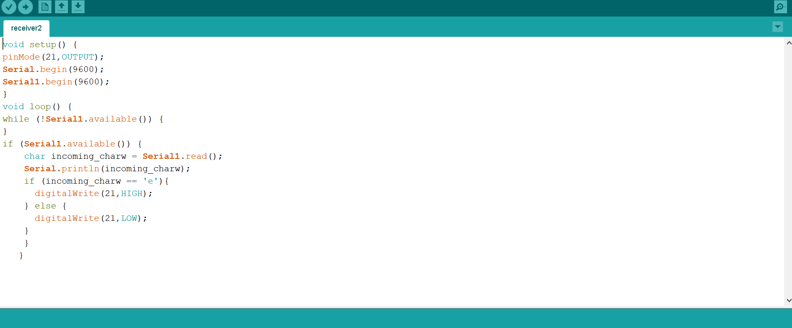

Objectives:
- Make two boards talk to each other to power an output device

For this week, my goal was to have two board work together to light up an LED when a button is pressed. Since I couldn't find my ItsyBitsy, I had to use a feather Huzzah ESP32 instead alongside a small green ATSAMD11 board. Because I was using the feather, I had to download the appropriate board from online to use with the Arduino IDE.
 I also planned to use a wired serial connection to make the boards communicate asynchrously.
Here is the schematic which shows how the circuit was constructed. The box on the left is the ATSAMD11 board and the box on the right is the feather Huzzah ESP32 board. These boards share a common ground and the feather is powered by the ATSAMD11. The ATSAMD11 acts as the transmitter
Here is what my circuit looks like when built:
The code was a bit troublesome for this as I kept running into syntax errors. I tried to have the transmitter send 'zero' when the button wasn't pressed and 'one' when it was through the serial1 port. However I used the integer type 'char' so it only sent 'e' and 'o' the last characters of 'one' and 'zero'. This made me think there was something wrong with my receiver when in fact I just need to change the if/else statement in the receiver code to look for 'e' and 'o' instead of 'zero' and 'one'. I also noticed when I got it to work that when the button wasn't pressed, the light would flick on and off rapidly. I noticed when I was touching the ATSAMD11 board, this problem was mitigated which seems to me like there was a grounding error somewhere.
Here is the code for the transmitter (ATSAMD11):
Here is the code for the receiver (feather Huzzah ESP32):
Here is a video demonstrating successful wired serial connection with an LED: